ENGLISH - GRADE 5
Barangay Anahao: The Prepared Community
T III/OSCES

Brgy. Anahao: The Prepared Community
Welcome to Brgy. Anahao
A story of care,
preparation, and bayanihan
A Village Close to Nature
The people of Barangay(Brgy.) Anahao live in harmony with nature, embracing a simple yet rich way of life. The community is predominantly agricultural, with farming as the primary source of livelihood. Residents cultivate crops such as rice, corn, coconuts, and root vegetables. It is considered the “food basket” of Odiongan, a town in the Province of Romblon.
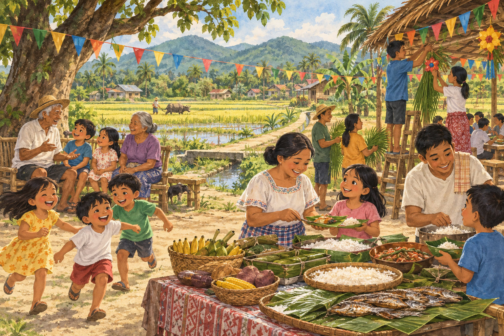
Warm Welcomes and Strong Ties
The locals are known for their warm hospitality and strong family ties. In Brgy. Anahao, you'll witness a strong sense of community: neighbors gather for traditional fiestas and celebrations, families share stories and laughter over homemade meals, and work together on communal projects and initiatives. Their resilience, resourcefulness, and joy in simplicity make Brgy. Anahao a truly special place.
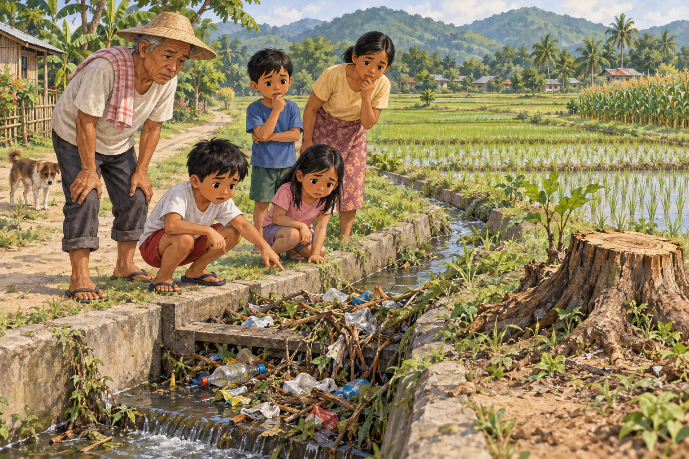
Caring for Nature
As time passed and with the rise of new technology, people began to neglect the environment. They started throwing garbage everywhere and cutting down trees without restraint. The elders forgot to teach the young about proper environmental care. They simply enjoyed nature’s gifts without properly caring for them.
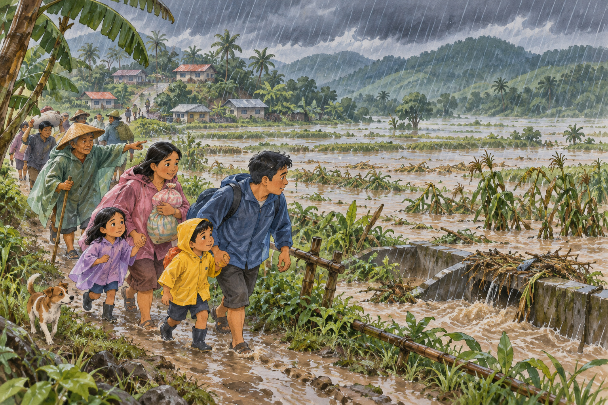
A Storm Was Approaching
One day, news came that a storm was approaching. It was said to be weak, so the residents paid little attention. They didn't prepare; they just went on with their daily activities. When the storm arrived, the people were surprised by how quickly the water rose and flooded their area because the canals and drainage systems were clogged. Their crops were destroyed, and some houses and properties were severely damaged. Upset by what had happened, they sought forgiveness and promised themselves they would take care of their beloved place—God's gift to them.
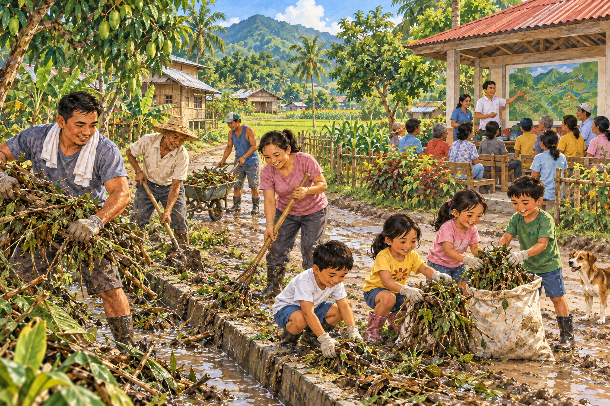
Bayanihan Begins
A few days after the storm, everyone joined in cleaning and restoring their community; the bayanihan spirit was revived, and each resident found a way to help. Brgy. Captain Magiting, called for an assembly. Determined to prevent such damage from happening again, he convinced the people of Brgy. Anahao to work together. They discussed the situation and the importance of disaster preparedness. They formed a Disaster Risk Reduction and Management (DRRM) committee, which he led. They also conducted regular drills and training sessions, created evacuation plans and emergency shelters, built flood-resistant homes and infrastructure, established early warning systems, and stockpiled emergency supplies and food.
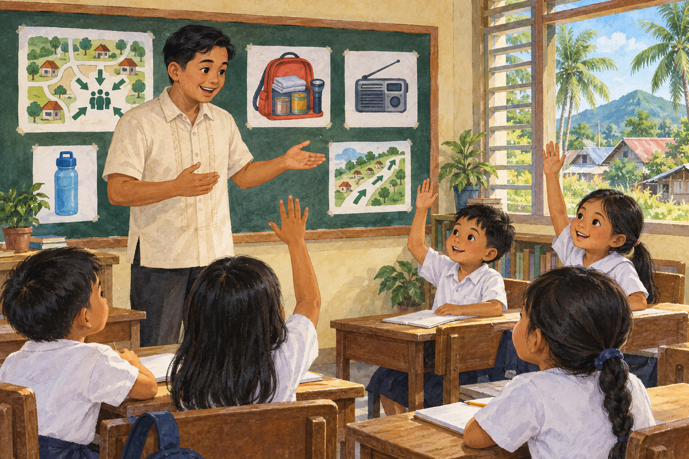
Learning Together at School
The school also helped disseminate information about disaster preparedness. The teachers integrated disaster preparedness into their daily lessons. In Mr. Masayahin's class, he asked his pupils to provide ideas on “how to create a flood emergency plan.” Biboy said, “I will identify safe zones in our barangay.” “That’s right,” Mr. Masayahin replied. “I will prepare an emergency kit with food, water, and first aid supplies,” Daday exclaimed. “That's amazing, Daday,” Mr. Masayahin added. “We should also have regular practice of evacuation drills,” Kakay suggested. “Sir! We should stay informed about weather updates from reliable sources all the time,” Toto shouted. It ended as a very lively discussion. They all went home informed with essential life skills.
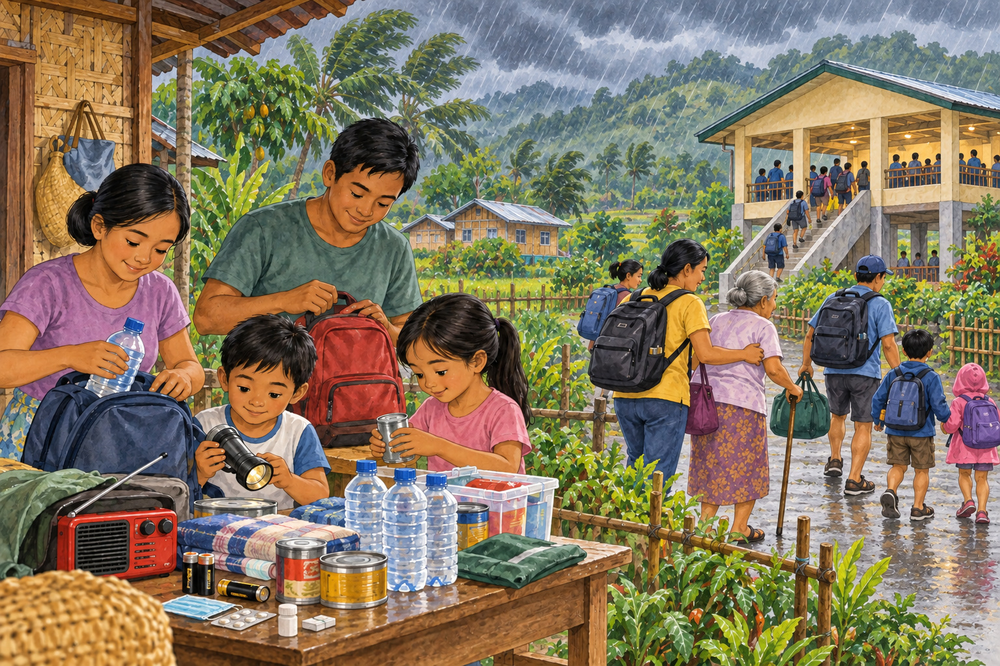
A Plan for the Next Storm
A few months later, the rainy season arrived. The Philippine Atmospheric, Geophysical, and Astronomical Services Administration (PAGASA) forecasted a forthcoming typhoon named “Kristine.” It was predicted to be a severe tropical storm. The residents of Brgy. Anahao immediately prepared. They implemented the precautionary measures they had learned. So, when the typhoon hit their area, no severe damage occurred. Everyone living there stayed safe and secure. They were all happy. Mr. Masayahin and his class were safe, as were all the residents of Brgy. Anahao.
The Community Stays Strong
When the rain stopped, everybody helped clean their barangay. They learned that preparation is the key to survival, that a family emergency plan saves lives, that staying informed and following warnings is crucial, and that community teamwork helps in times of disaster.
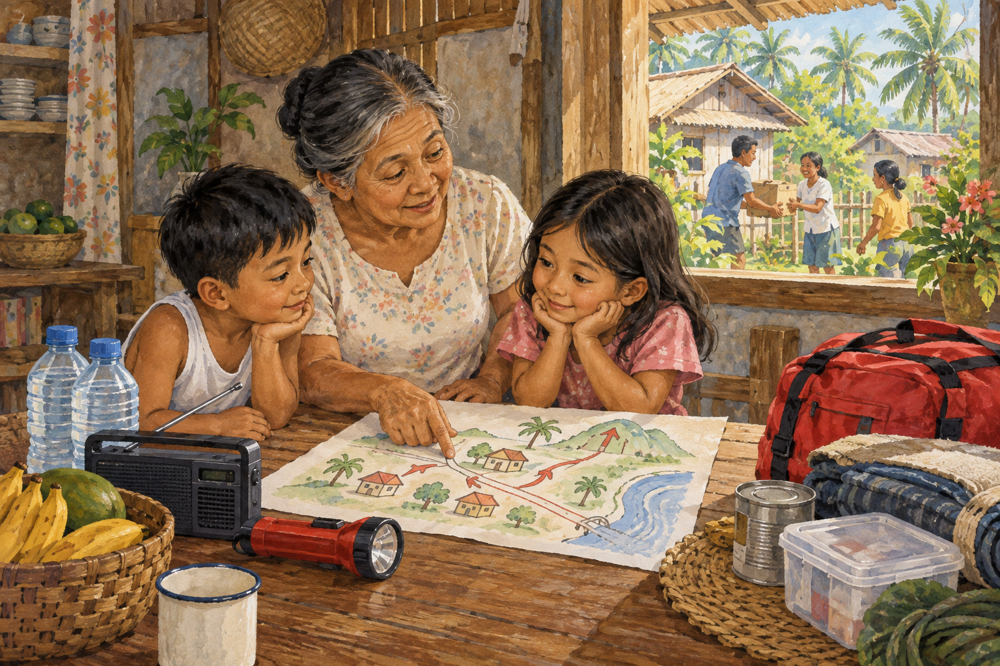
Moral of the Story
- 1 Preparation is the key to survival.
- 2 Community teamwork and cooperation (Bayanihan) saves life.
- 3 Early warning systems and emergency plans are crucial.
- 4 Disaster risk reduction and management is everyone’s responsibility.
Comprehension Questions
CHECK YOUR UNDERSTANDING
Encircle the letter of the correct answer.
Where is the setting of the story?
If you were one of the characters in the story, would you also help in the preparations for the disasters? Why/Why not?
If you were asked, what should be included in the emergency kit?
What did you learn after reading the story?
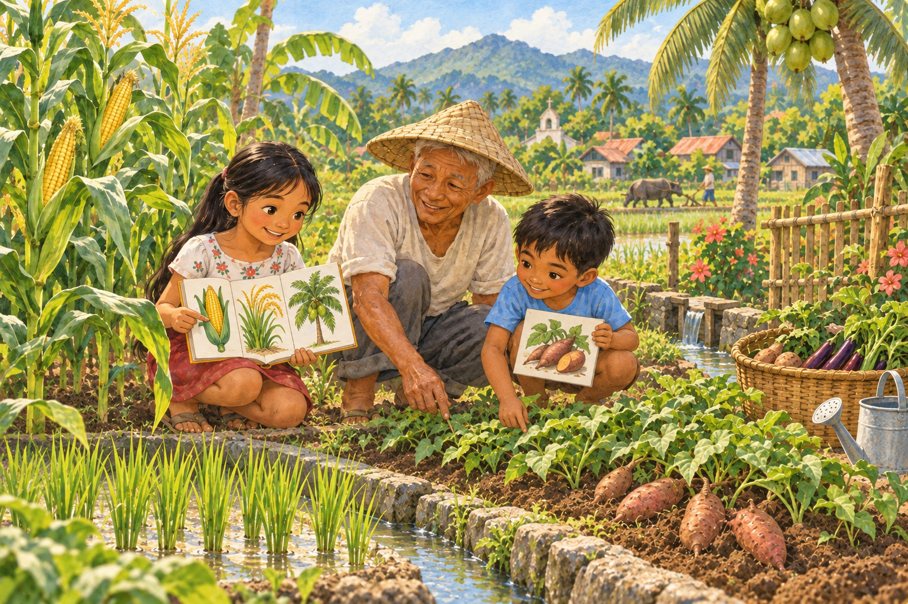
Glossary
- Brgy. Anahao
- A community in the Province of Romblon known for its agricultural practices and strong sense of community
- Barangay(Brgy.)
- A term used in the Philippines to refer to a village, district, or ward
- Bayanihan
- A Filipino custom referring to communal unity and cooperation for a particular purpose
- Clogged Canals and Drainages
- Blocked water pathways that caused flooding during the storm in Brgy. Anahao
- Disaster Risk and Reduction Management (DRRM) Committee
- An agency formed to address disaster preparedness and management
- Flood-Resistant Homes
- Houses designed to withstand flooding and minimize damage
- God’s Gift
- A reference to the natural beauty and resources
- PAGASA
- Philippine Atmospheric Geophysical Astronomical Services Administration, responsible for weather forecasting in the Philippines
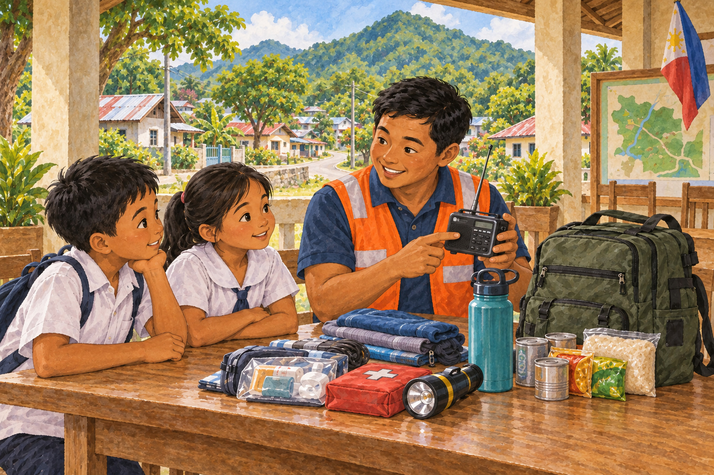
Glossary
- Precautionary Measures
- Steps taken in advance to prevent or minimize damage or harm
- Resilience
- The ability to recover quickly from difficulties
- Root Vegetables
- Vegetables that grow underground
- Severe Tropical Storm
- The classification of the typhoon “Kristine” forecasted to hit Brgy. Anahao
- Stockpiled Emergency Supplies
- Gathered resources for emergency use, ensuring preparedness
- Strong Family Ties
- Close relationships and connections within families
- Traditional Fiestas
- Celebrations with cultural significance
- Warm Hospitality
- Friendly and welcoming nature of the locals
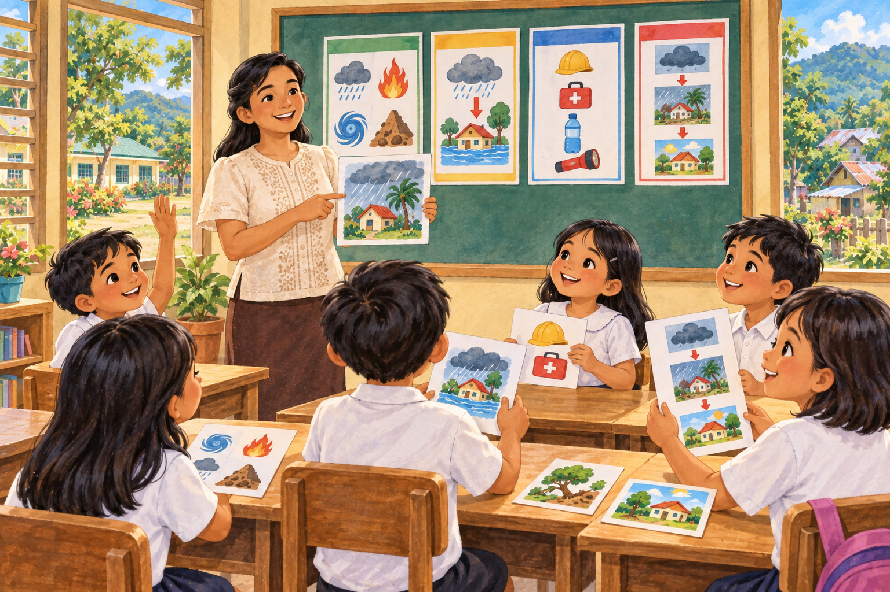
Learning Competency
Learning Area
English
Grade Level
5
Quarter
3
Lesson / Week No.
Week 1–2
Learning Competency
Distinguish text-types according to purpose and features: classification, explanation, enumeration and time order.
LANGUAGE - GRADE 1
Messy’s Preparedness Adventure
Teacher II / OSCES

Messy’s Preparedness Adventure
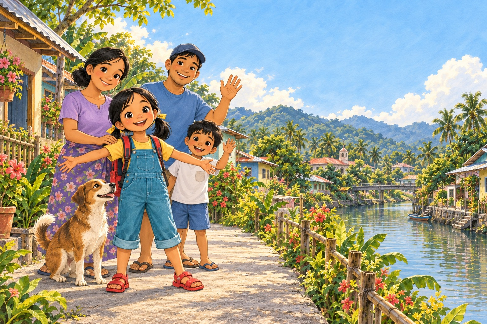
Meet Messy
A story about
preparation, courage, and helping one another
A Curious Girl by the River
This is Messy.
She is s curious girl.
She lives near river.
The river is quiet.
But it can be dangerous.
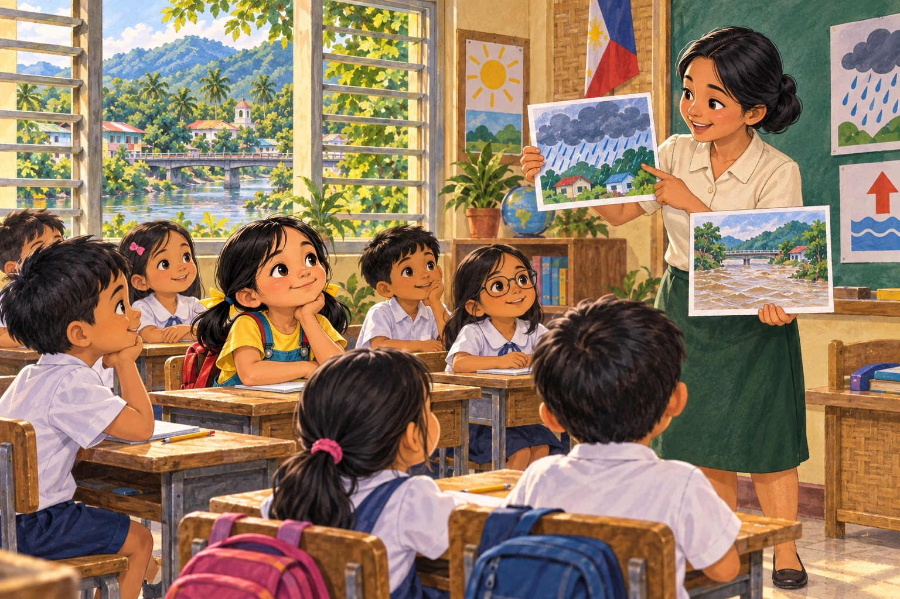
Learning About Floods
Teacher Lopez talked about floods.
Messy listened.
She wanted to know more.
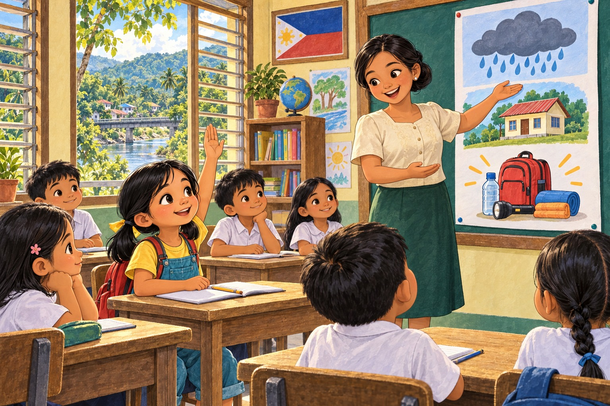
We Can Be Prepared
Messy asked, “How can we be ready for the flood?”
Teacher Lopez said,
“We cannot stop the rain.
But we can be ready”
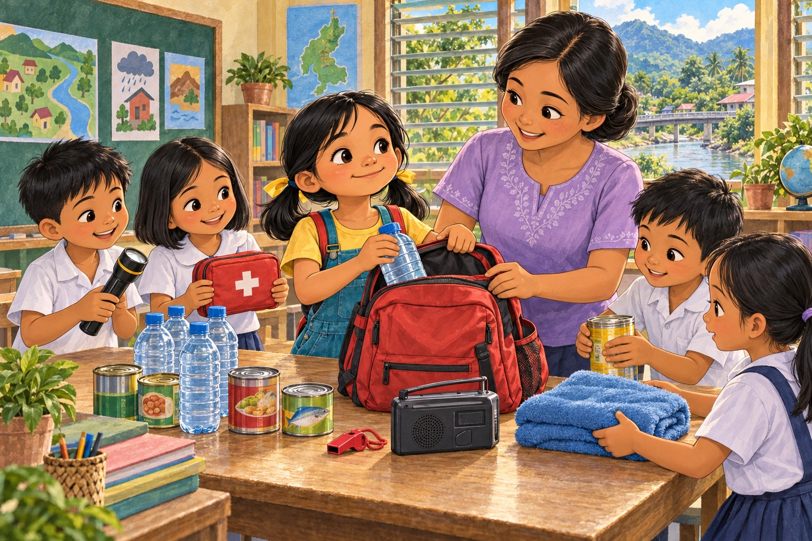
Preparing an Emergency Kit
Teacher Lopez showed what to put in an emergncy bag.
She said, If the water gets high, go to the safe place."
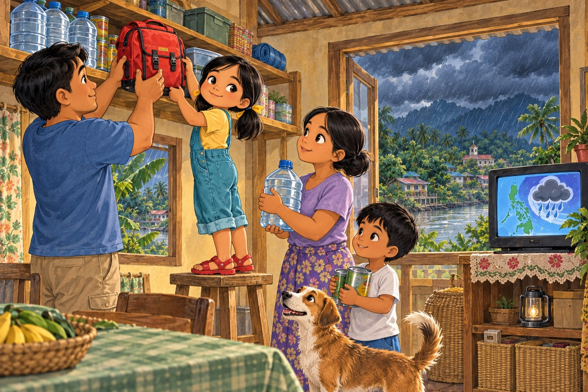
A Storm Is Coming
One day, Messy heard the news.
A big storm is coming.
It will rain hard.
There maybe a flood.
Messy remembered her lesson.
She got her emergency bag.
She went to a safe place.
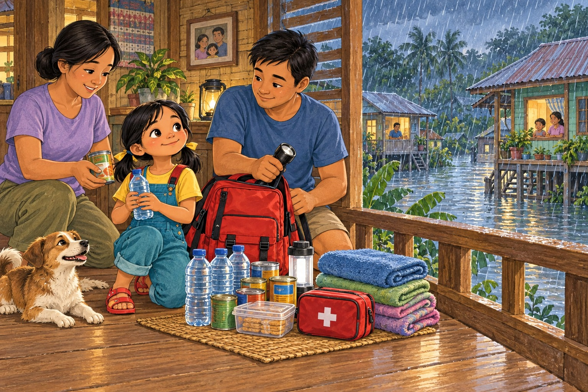
Ready for the Rising Water
The storm came.
The water got high.
Messy's barangay was ready
They had bags and food.
They stayed safe inside their houses.
They waited until the water went down.
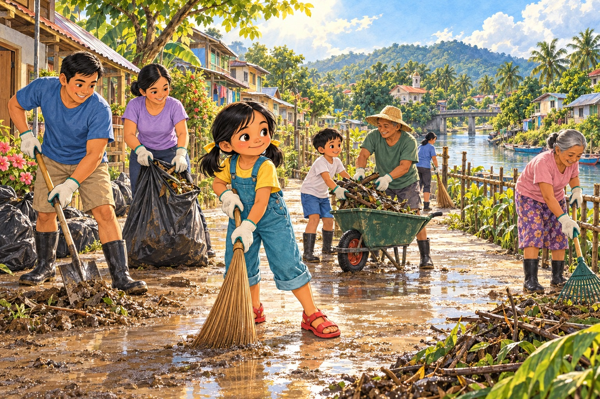
Cleaning Together
The storm was gone.
Everyone helped.
They cleaned their place.
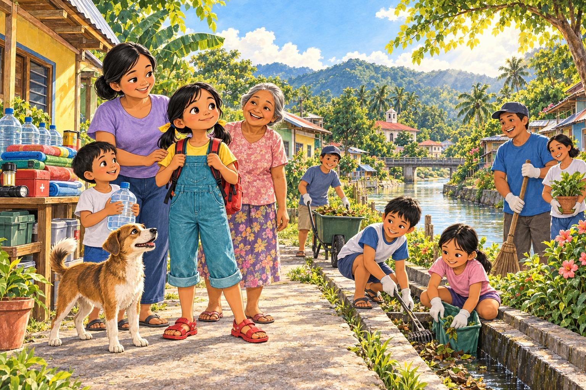
Things Were Getting Better
The sun came out.
Messy looked around.
She said, "Things are getting better!"
If we help each other,
And we are ready.
Everything will be okay!"
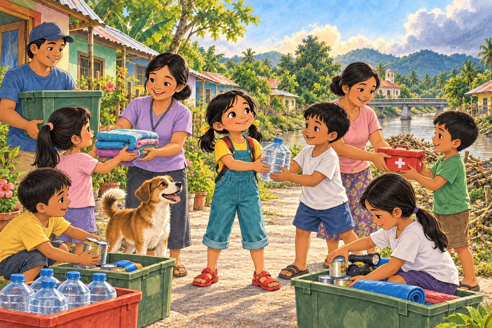
Moral of the Story
- Be ready.
Work together.
We can do it, even if it is hard.
Comprehension Questions
CHECK YOUR UNDERSTANDING
Encircle the letter of the correct answer.
What did Messy and her friends prepare in case of a flood?
Messy prepared the emergency kit. What must be inside it?
From the story, what can you infer about Messy's attitude towards helping others?
Why was the community's preparation for the flood effective?
What lesson can be drawn from Messy's experience during the flood?
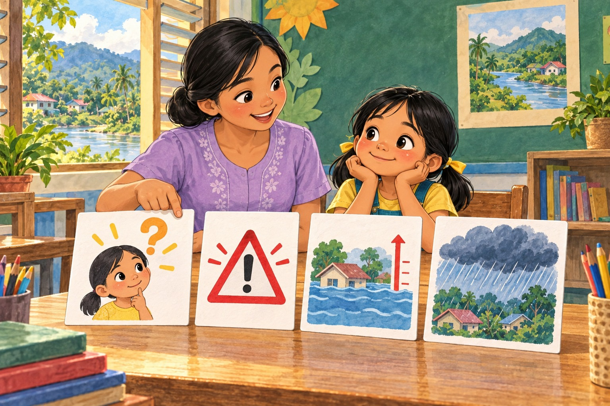
Glossary
- Curious
- Eager to know or learn something
- Dangerous
- Able or likely to cause harm or injury
- Floods
- An overflowing of a large amount of water beyond its normal confines, especially over what is normally dry land
- Storm
- A violent disturbance of the atmosphere with strong winds and usually rain, thunder, lightning, or snow
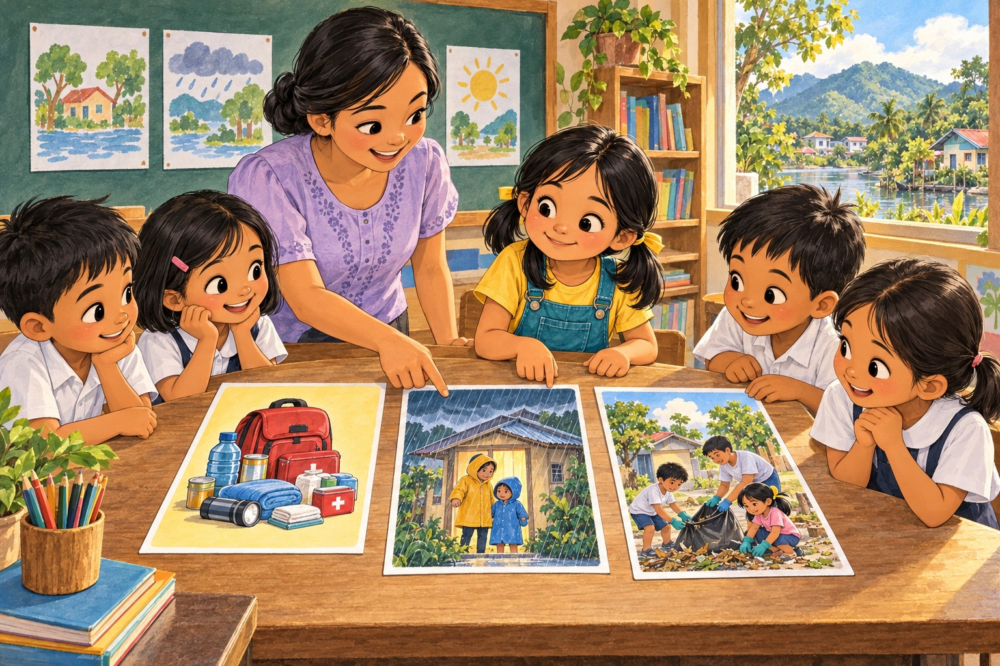
Learning Competency
Learning AreaLanguage (Matatag Curriculum)
Grade LevelGrade 1
Quarter2nd, 3rd, 4th
Lesson / Week No.Lesson 20 / Week 8
Learning CompetencyLANG1CT-IV-3 Draw and discuss information or ideas from a range of text (e.g., stories, images, digital texts).
a. Note and describe main points (e.g., main characters and events)
b. Sequence up to three (3) key events
c. Infer the character’s feelings and traits
d. Predict endings
e. Relate ideas or events to one’s experience
a. Note and describe main points (e.g., main characters and events)
b. Sequence up to three (3) key events
c. Infer the character’s feelings and traits
d. Predict endings
e. Relate ideas or events to one’s experience
ENGLISH - GRADE 3
Avriel and the Storm

Avriel and the Storm
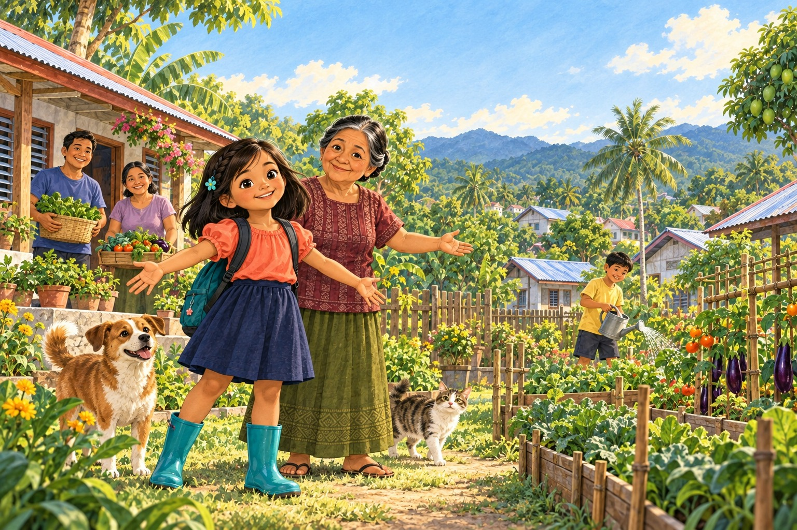
Meet Avriel
A story about
preparedness, cooperation, and courage
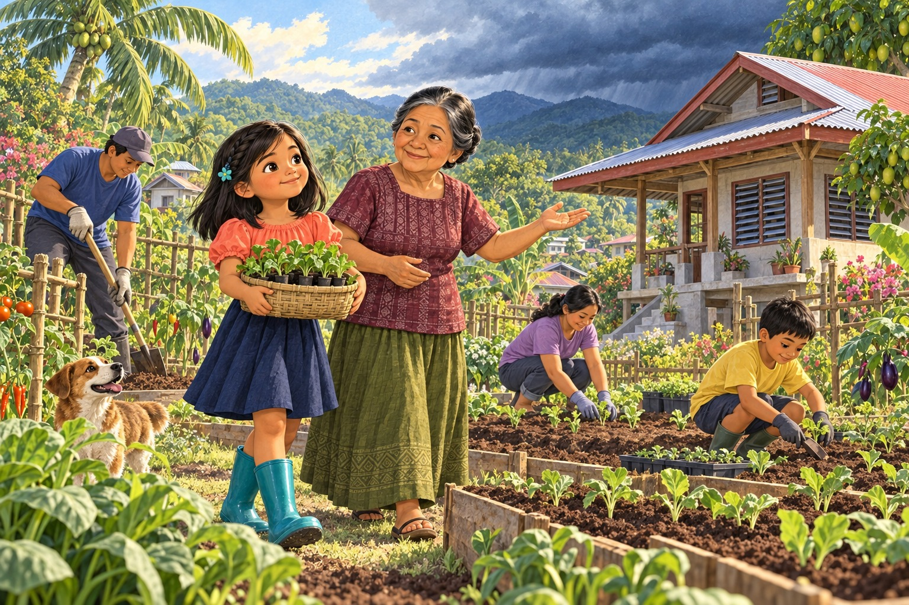
Garden Preparations and Lola’s Stories
One sunny afternoon in the small barangay of Agojo, Avriel and her family busied themselves with their garden preparation, getting it ready for the next harvest.
Avriel enjoyed spending time with her grandmother, Lola Renita, who always shared stories about how their ancestors built strong houses in anticipation of typhoons.
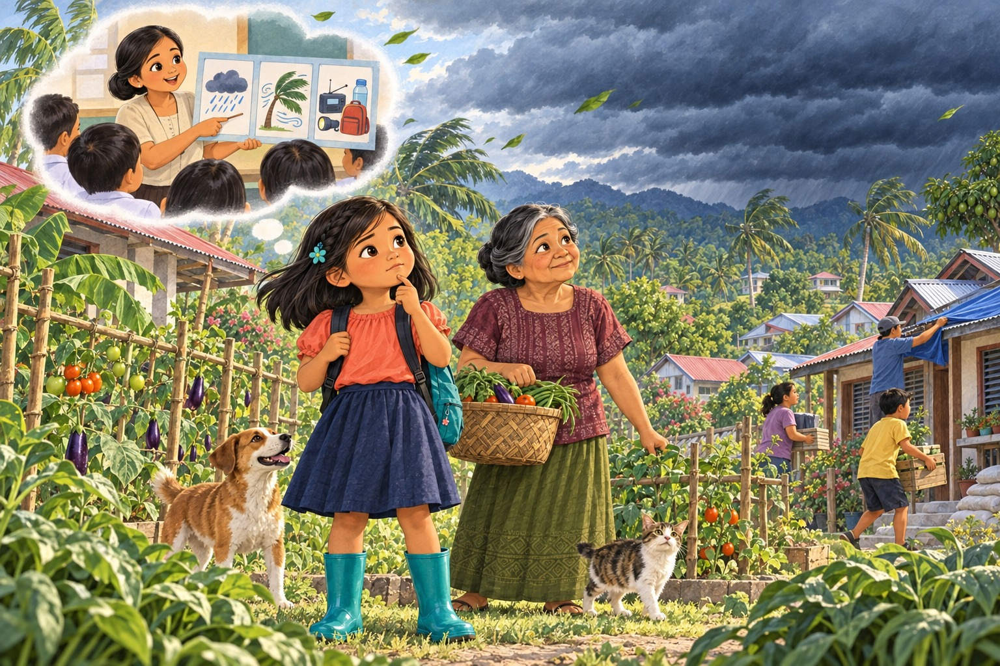
Signs of an Approaching Storm
The sky was beginning to cloud over, and Avriel sensed that the air was getting cooler. She recalled from school lessons that a change in the weather could signal an approaching storm.
She remembered what Ma'am Gina Gabuna had taught them during Disaster Preparedness Week: “Always be prepared for the unexpected!”
“Lola, I think a storm is coming!” Avriel said worriedly.
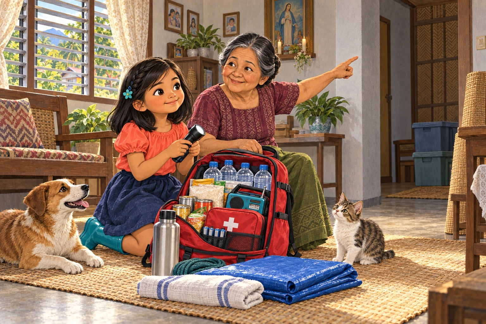
Checking the Emergency Kit
Lola Renita smiled and said, “You’re right, Avriel. First, check the emergency kit. We want to ensure everything, including food, water, flashlights, and batteries, are ready in case the power goes out. Do you remember what to do if a typhoon hits?”
Avriel nodded. “We stay inside the house, away from windows, and wait for the storm to pass.”
“That’s correct,” Lola said. “But we should also listen from all reliable sources available for the latest typhoon news updates.”
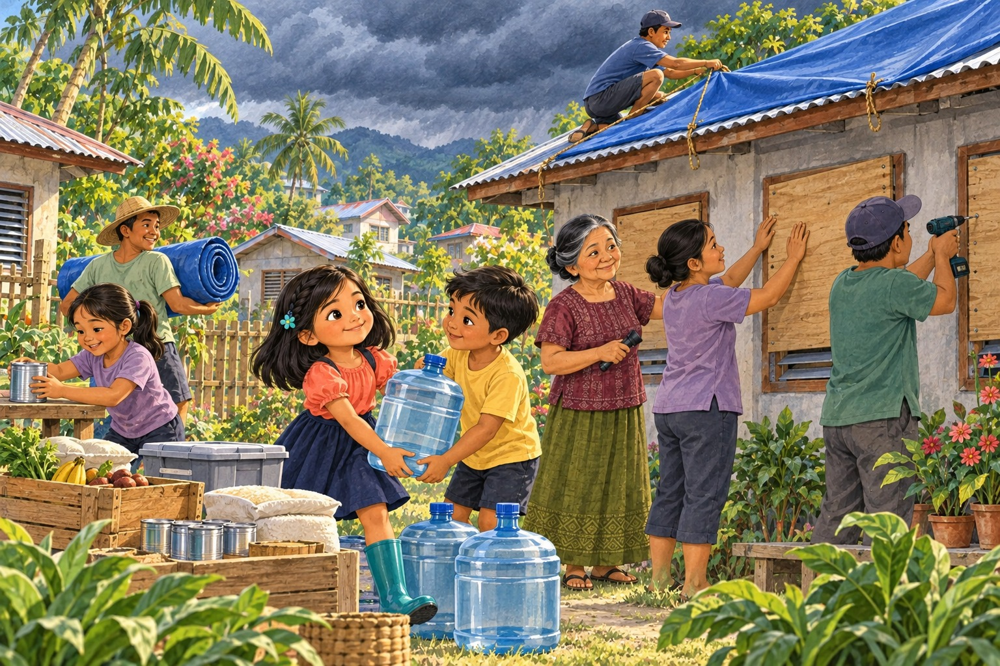
Neighbors Work Together
Just then Avriel's neighbors, the Gusi family, rushed over to their house. “Avriel! Lola Renita! We heard the weather report! A strong was typhoon coming! Can we help you prepare?” Mrs. Gusi asked.
Lola Rosa smiled. “Thanks for being here. Let's team up and ensure everyone stays safe. We'll check the house for leaks, cover the windows, and make sure there’s enough food and water for everyone.”
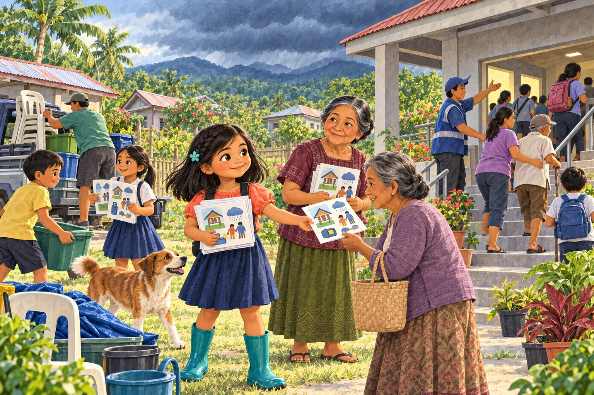
Preparing the Whole Brgy.
Avriel and her friends helped secure houses in the neighborhood. They too helped in the distribution of flyers on what to do during emergencies. Some of Avriel’s friends took charge in guiding the elderly and the young to the evacuation center as part of early safety preparation.
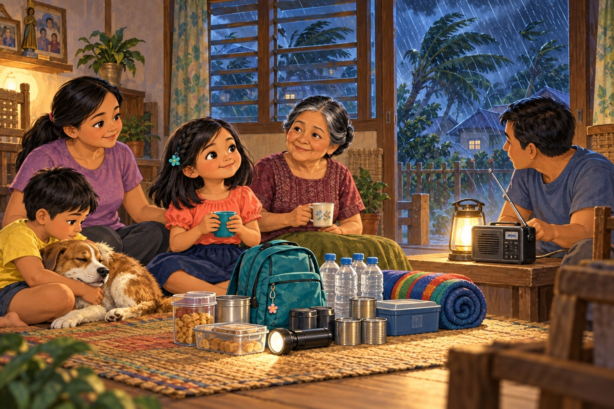
Waiting Through the Storm
As night began to fall, strong wind and heavy rains kept everybody alert! Avriel, her family and the whole barangay waited for the strong storm to pass.
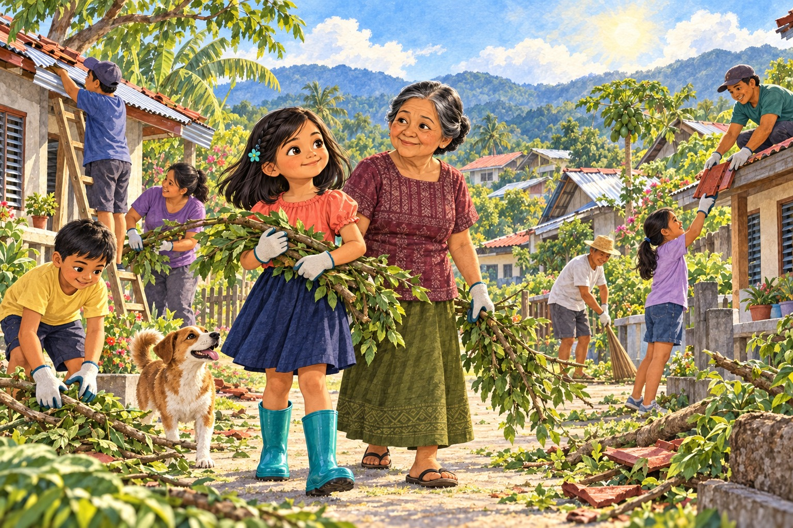
Safe After the Storm
The sun shone brightly the next morning, and all the children came out to see how everyone was doing. Tress have fallen, lost branches are everywhere but their houses were safe, although some had minor damages.
“We were prepared,” said Avriel proudly. “Thanks to our family, neighbors, and school, we were guided on what to do during a storm.”
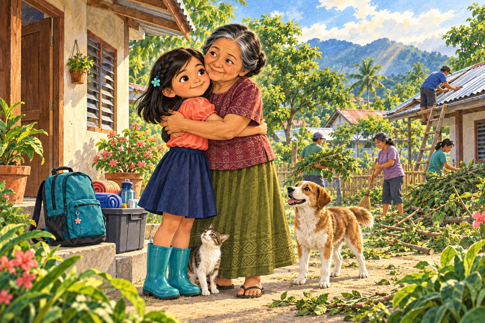
Being Prepared Makes a Difference
Lola Renita hugged Avriel and said, “Yes, being prepared is what makes all the difference. We may not be able to stop a typhoon, but we can certainly ensure we are safe and ready for it.”
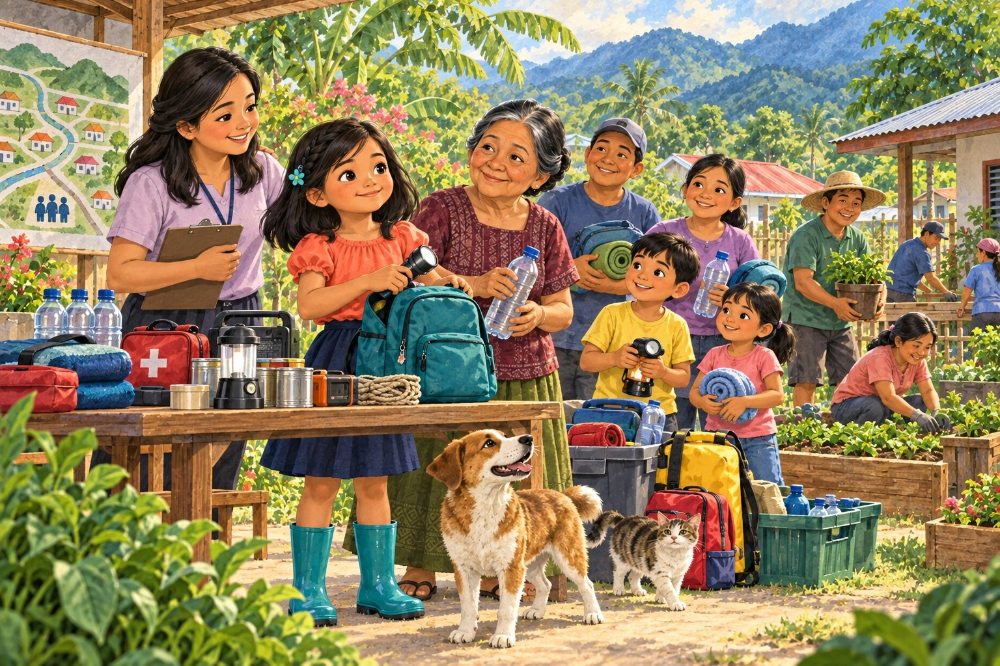
Moral of the Story
- 1Being prepared for the unexpected can make all the difference in keeping you safe.
Comprehension Questions
CHECK YOUR UNDERSTANDING
Encircle the letter of the correct answer.
What did Avriel recall from her school lessons about the weather?
What did Lola Renita ask Avriel to check before the storm?
Why did the Gusi family rush over Avriel’s house?
How effective was the community’s preparation for the typhoon?
What lesson about disaster preparedness can we learn from this story?
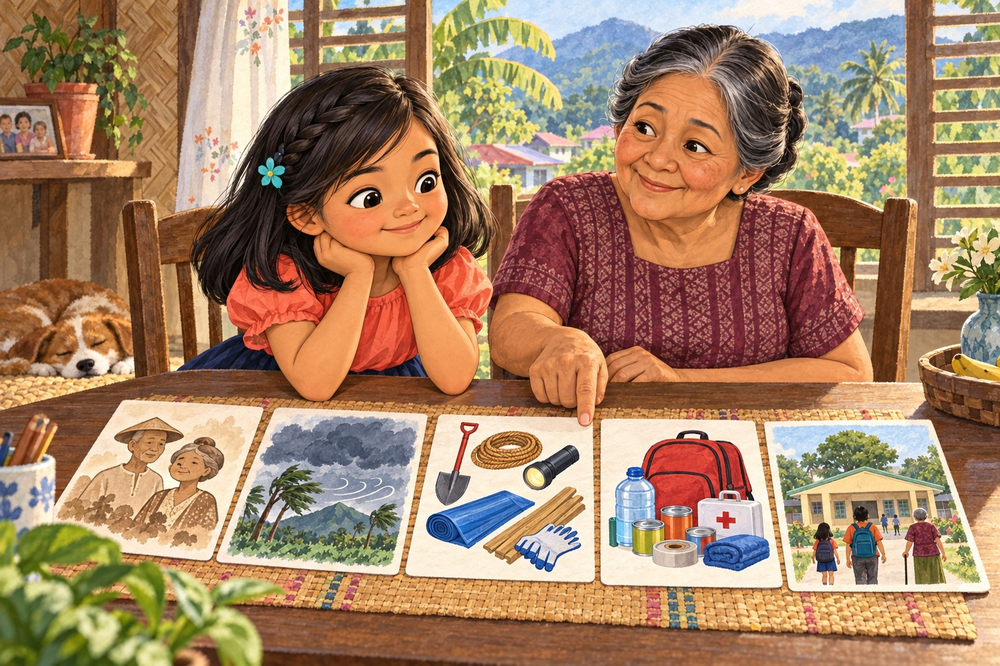
Glossary
- Ancestors
- People in the family who lived long ago, such as grandparents, great-grandparents, and earlier family members
- Approaching
- Coming closer
- Available
- Ready to use or get
- Emergency Kit
- A bag or box with important things we need during an emergency or disaster
- Evacuation Center
- A safe place where people go during an emergency or disaster
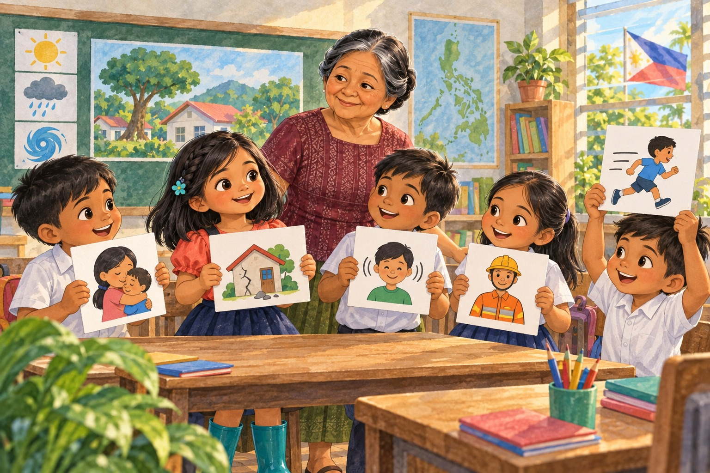
Glossary
- Hugged
- Putting your arms around someone to show love, care, or comfort
- Minor Damages
- Small or not serious harm or damage to something that can be repaired easily
- Nodded
- Moving your head up and down to show “yes” or agreement
- Reliable
- Someone or something that can be trusted or depended on
- Rushed
- Went or moved very quickly because there was little time
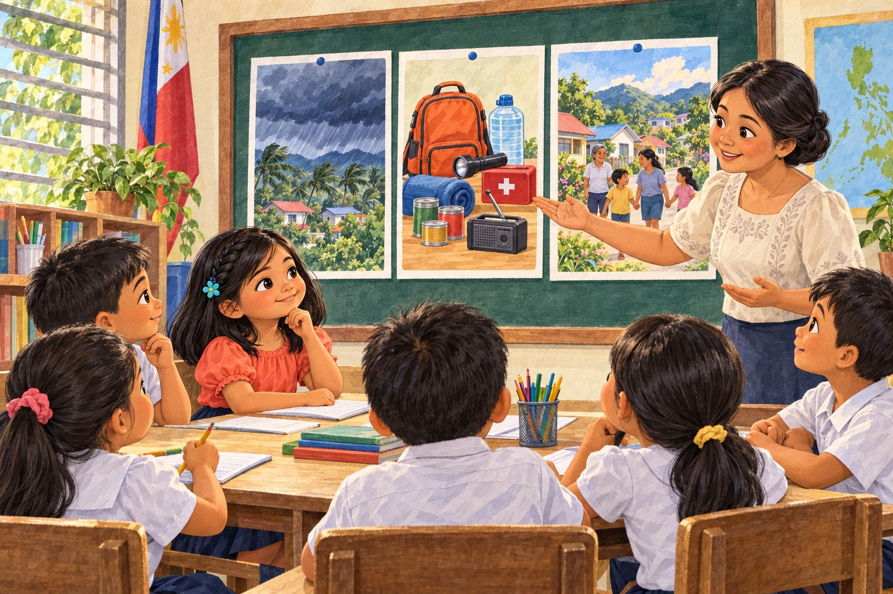
Learning Competency
Learning AreaEnglish
Grade LevelGrade III
Quarter2nd Quarter
Lesson / Week No.Week No. 7
Learning CompetencyMake inferences and draw conclusion based on texts (pictures, title and content words) – EN3RC-IIIa-2.11
Cover · 1 of 15
Brgy. Anahao: The Prepared Community
Grab either side of the page and drag, or use the arrow keys.